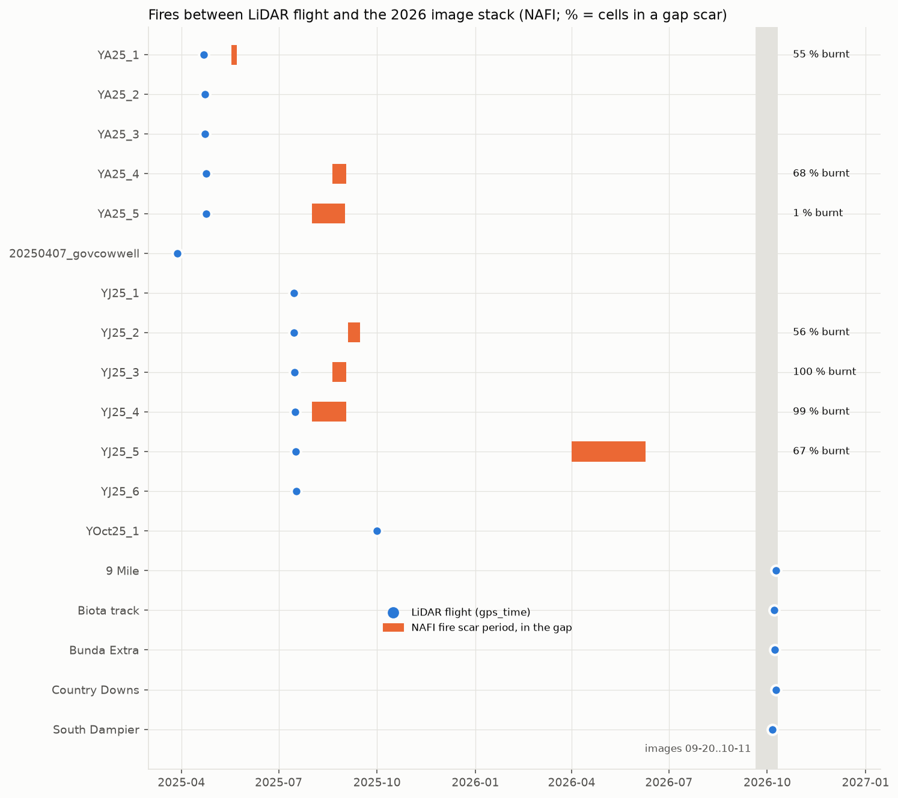
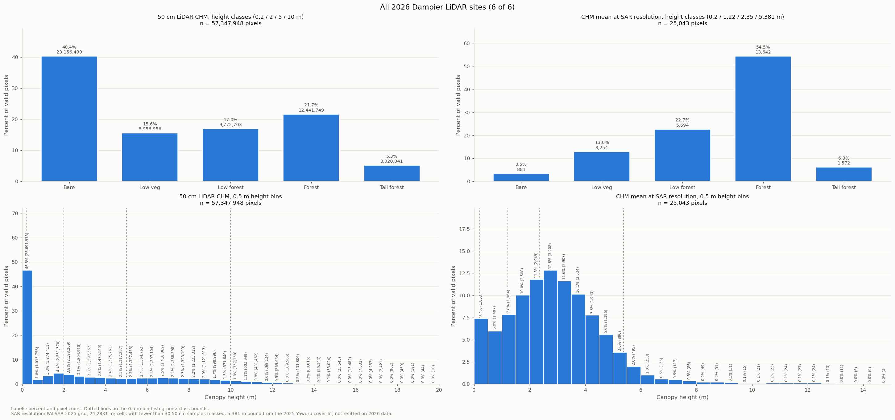
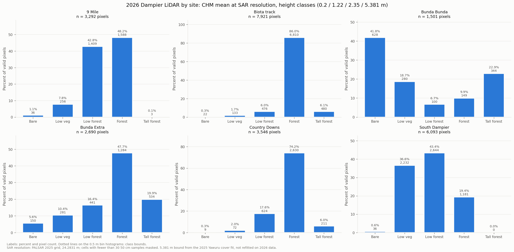
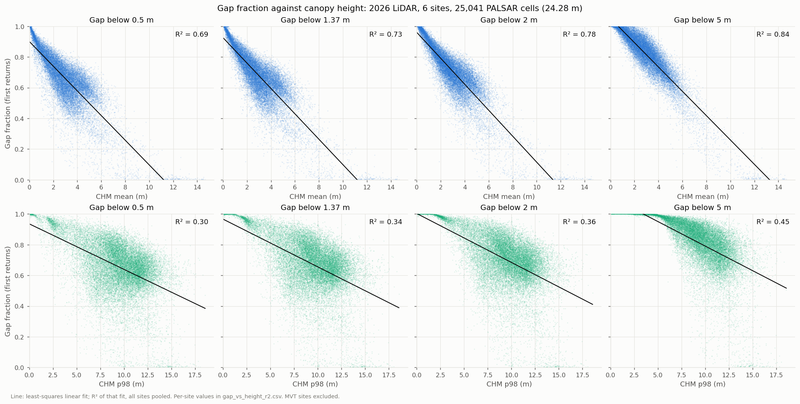

1 · LiDAR → training labels
Drone LiDAR point clouds → 50 cm CHM and cover → statistics per stack pixel (20 m NISAR in 2026; about 24 m PALSAR in 2019–2025). EPSG:7851.
Result
| Source | Areas | Label px | Flown | Note |
|---|---|---|---|---|
| Dampier 2026 | 9 Mile, Biota track, Bunda Extra, Country Downs, South Dampier | 34,714 | 2026-10-05 to 10-09 | Unfiltered clouds (no DJI Terra density filter). Bunda Bunda and 2 MVT sites excluded; 0 cells burnt in the image window |
| Yawuru 2025, kept | YA25_2, YA25_3, YA25_5, 20250407_govcowwell, YJ25_1, YJ25_6, YOct25_1 | 4,308 | 2025-03 to 2025-10 | YA25_1–5 single-return |
| Yawuru 2025, dropped | YA25_1, YA25_4, YJ25_2, YJ25_3, YJ25_4, YJ25_5 | — | burnt between flight and the 2026 images (NAFI + S2); kept for 2019–2025 | |
| Total | 12 areas | 39,022 |
Table: 2026 (NISAR grid). 2019–2025: the same LiDAR on each year's PALSAR grid, all 13 Yawuru areas: 29,266–29,800 label px per year (4 · Regression).
Targets per 20 m pixel (from the 50 cm p98 CHM cells inside it):
- px mean — mean of the 50 cm cells (m).
- p98 — 98th percentile of the 50 cm cells (m).
- cover 1.37 m — fraction of 50 cm cells ≥ 1.37 m.
- At the labels: r(p98, mean) 0.79, r(p98, cover) 0.61, r(mean, cover) 0.82.
Why 6 Yawuru areas were dropped

The 2026 LiDAR



Caveats
- Yawuru labels are 2025, the images 2026. Unburnt areas only, but growth in one year is not modelled.
- YA25_1–5 were flown single-return (fewer returns under the canopy).
- 2026 Dampier clouds: re-exported without the DJI Terra 5 cm density filter (all 5 sites, no position shift). Against the filtered labels: d mean −0.013 m, d p98 −0.006 m, d cover −0.003 (REPORT_unf_change.txt §1).
- CRS: labels are on the EPSG:7851 stack grids. Yawuru 2025 CHMs are GDA2020 with a wrong EPSG:32751 label: corrected
*_mga51copies (AUSPOS + user statement). The label px move with the stack grid (0.03–0.47 m).
Code and data
- Point clouds and CHMs:
G:\Dampier\Dampier Lidar 2026\<site>\(LAStools pipeline); Yawuru:G:\Yawuru\. - CHM statistics on the 20 m grid: nisar_2026\labels_2026.py, lidar_2026\structure_grids.py, structure_2d\cells_2d.py.
- Label rows and folds: class_defs\cover_height_rows.py →
class_defs\outputs\cover_height\rows.parquet,class_defs\outputs\folds_cover_height.json; p98 rows p98_cover.pyrows. - Records:
CATALOG.md(not in this repo) (2026 drone LiDAR section).